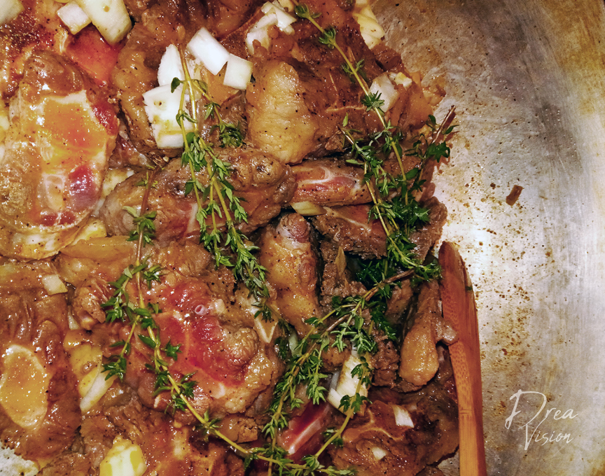

Oxtails are THE DISH in most Jamaican households. There is something special about this rich, meaty delight that is often slow cooked with butter beans and served over a steaming plate of rice and peas! Oxtails are usually quite expensive with the cuts varying anywhere from $8-$12/lb. However, it is well worth the splurge as the meat is filling and the conversation guaranteed to be enjoyable around this special dish. It is virtually impossible to be in a bad mood while eating tender cuts of well seasoned meat; meat so delicious that you don’t feel guilty for sucking the flavor literally off the bone! Grandma would always make sure that when it was a special occasion, oxtails were a part of the celebration. My take on oxtails is this: Why wait for a special occasion when oxtails ARE the special occasion?
Oxtails are generally a tough cut of meat requiring a long cooking time, usually anywhere between 3-4 hours, more if you want the meat sliding right off the bone. Slow cooking in a cast iron pot is strongly recommended.
Season oxtail with salt, pepper and soy sauce. Set aside and allow to marinate for a minimum of at least an hour although overnight is strongly recommended. Heat pot with vegetable oil and add oxtails stirring until oxtails become brown. Make sure to scrap any browned bits at bottom of pot. After, browning, drain any excess oil and add tomato, green and white onions, thyme, and garlic while continuously stirring.
Next, add the three cups of cool water and reduce heat. Within the second hour of cooking, add Grace Oxtail Seasoning to taste and ketchup. Within the last two hours of cooking, add browning and scotch bonnet pepper, making sure that the pepper does not burst in the pot. You can also slice pepper and remove seeds before adding. A little goes a long way with scotch bonnet pepper so add according to how spicy you want your oxtails. Within the last 30 minutes of cooking, add broad or lima beans and continue to season with Grace Oxtail Seasoning, salt and pepper to acquired taste. If you require a thicker sauce, gradually add another half cup of water and another tablespoon of ketchup. Serve with white rice or a Jamaican staple that my grandmother loved, rice and peas.
You can always adjust the thickness of your oxtail liquid by adding water. Also when shopping for oxtail, look for cuts that are not completely surrounded with fat.